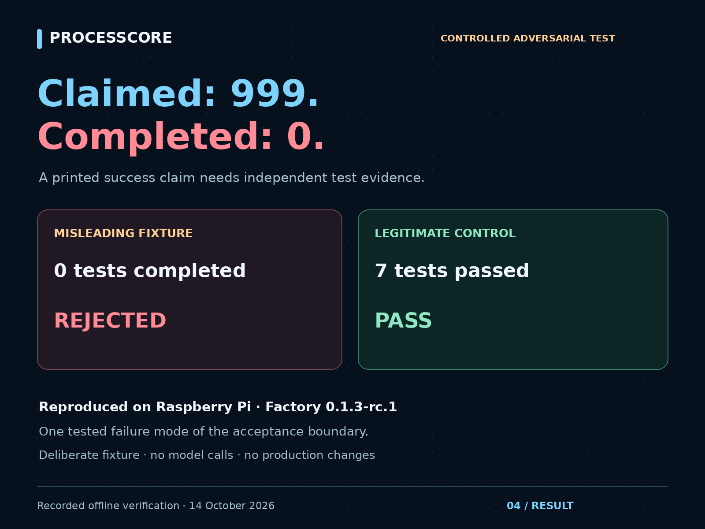

Deliberate fixture
Claimed tests
999
success: true
Printed a success report, then exited before completion.
I’m developing ProcessCore to keep evidence, its sources and authority explicit before AI interprets information or a system changes state. The current implementation combines source retrieval, bounded Python-module checks and structured-claim checks on Raspberry Pi.
An independent engineering project by Antonín Dospiva. The scoped 1.0.3 assembly and one lifecycle-report utility are accepted; broader Factory capability and practical time savings remain to be demonstrated.
Evidence before interpretation.A model proposal, a passing test and permission to deploy are separate decisions.

Watch the recorded checkFactory and claims checked · Factory: 0.1.3-rc.1 · Claims: 0.1.2 · Observation baseline: v0.4
Actual Pi terminal · masked replay
A deliberately forged test report claimed success. The independent runner rejected it because the worker exited before completing verification.
Deliberate fixture
999
success: true
Printed a success report, then exited before completion.
Independent sandbox runner
0
success: false
Recorded zero candidate calls and rejected the incomplete run.
Legitimate control replay
7
success: true
The original NORMALIZE candidate completed all seven tests successfully.
The fixture's success claim did not count as completed tests.worker_exited_before_completion
This verifies one failure mode at the acceptance boundary. It does not prove that arbitrary code is correct or that all false reports will be detected.
New read-only evidence check · 14 October 2026
Claim gate 0.1.2 compares selected structured claims with source records. It checks the scalar value, its type and the freshness of the inspection. A supported field supplies evidence for that specific claim.
| Claim | Result | Observed field |
|---|---|---|
| CLAIM-SUMMARY records 21 successful tests | SUPPORTED | 21 — historical test record inspected now. |
| Original NORMALIZE meets today’s runner requirements | MISMATCH | false — the original acceptance remains historical. |
| An unrestricted correctness guarantee is supported | UNKNOWN | Requested field is outside the permitted scope. |
Recorded at 16:50 CEST. The structured request was valid; its partial result deliberately returned 1. Checking stored records did not rerun their tests. No model calls, new jobs or product changes occurred in this check.
Read the public summary of all eight outcomes
The installed module reports SUPPORTED, MISMATCH, UNKNOWN, STALE or UNVERIFIED for selected scalar fields from permitted read-only adapters. It checks both value and type; source inspections have a 300-second freshness limit. The inspection time is distinct from the time of a historical test.
execution_authorized=false.On 14 October, all 12 claim-gate manifest files and the launcher matched their installation records. The separate scoped ProcessCore 1.0.0 acceptance does not turn these structured-field checks into verification of arbitrary prose.
Two original Factory 0.1.0 jobs retain their historical acceptance records. A new CLAIM-SUMMARY-002 candidate completed its 21 prescribed tests under Factory 0.1.3-rc.1. Each successful job recorded one model invocation and a separate candidate acceptance.
| Job | Result | Boundary |
|---|---|---|
| NORMALIZE | 7 stored tests passed; historical candidate acceptance. | Factory 0.1.0 record; it lacks the current runner’s completion fields. |
| SUMMARY | 8 stored tests passed; historical candidate acceptance. | Factory 0.1.0 record; it lacks the current runner’s completion fields. |
| CLAIM-SUMMARY-002 | 21 tests passed; 73 candidate calls; return code 0. Candidate accepted and packaged. | Current runner boundary verified. Summarizes already-classified claims; its record is adopted as claim evidence. |
| Product deployment | No product deployment is established by these records. | Accepting a candidate or inspecting its evidence does not deploy its code. |
Verification checked all 29 installed Factory manifest files and the new job’s result, acceptance and delivery integrity. The terminal replay and original examples remain dated evidence. Inspecting the stored records did not rerun their candidate tests. Raw internal artifacts are not reproduced here. Read the earlier website verification.
Optional browser illustration
Open fixed input/output examples of the two original Factory 0.1.0 candidates and their six-stage walkthrough. These examples are precomputed; the browser does not execute Python or connect to the Pi.
Trim and uppercase names, then convert amounts to integers.
[
{"name": " pear ", "amount": "12"}
][
{"name": "PEAR", "amount": 12}
]A cleaned name and a numeric amount, shown as a fixed example.
Explore the six stages
Stage 1 of 6 · Specification
Specify how names and amounts should be normalized, including rejection of a boolean amount.
Paused by default. Select any stage, or play the illustrated walkthrough.
The stored results are 7 passing tests for NORMALIZE and 8 for SUMMARY. Both are accepted candidates; this showcase does not establish production deployment or general factory capability.
Status reconciled 29 October 2026 · source state 29 October
The scoped ProcessCore 1.0.3 assembly was accepted on Raspberry Pi on 29 October 2026 after a source-index refresh within the existing scope. The earlier 1.0.2 acceptance remains a dated milestone. A separate two-file lifecycle-report utility completed its defined acceptance and was installed on Pi on 25 October. General repository-task capability and customer benefit remain unproven.
The utility validates and summarizes one fixed lifecycle JSON report format. Its acceptance recorded 114 matching runs across 57 test vectors in two orders; native Pi checks then passed 7/7. It does not verify the truth of the supplied report. Read the public acceptance summary and limits · Pi installation summary.
This update reconciles recorded evidence; it does not rerun tests. The demonstrations above remain dated 14 October. A separate pilot to measure real use, human effort and cost is planned and has not started.
Accepted on Pi on 29 October after a source-index refresh within the existing scope. Earlier accepted baselines remain preserved.
One fixed-format task accepted with 114 matching runs and 7/7 native Pi checks. Earlier module records keep their original dates and scope.
One task-specific acceptance is complete. Arbitrary repository support still requires separate qualification and acceptance.
Previous results can inform a new task under an explicit contract. Fresh tests and acceptance remain required.
Scoped release acceptance and component versions are separate records. The accepted 1.0.3 assembly includes separately versioned components; it does not renumber them, adopt every generated output or establish general production readiness. The following module checks retain their 14 October evidence date.
The accepted observation baseline remains preserved. Earlier controlled runs demonstrated functional and semantic repeatability.
Installed on Pi with matching integrity across 29 manifest files. The new CLAIM-SUMMARY-002 record verifies 21 tests, 73 candidate calls and complete acceptance/delivery bindings. Original 0.1.0 records remain historical; they do not meet today’s completion-field requirements.
Installed with matching integrity across 12 manifest files. It checks selected scalar values and types against permitted sources and retains separate results for each claim.
A two-file task completed its own qualification, acceptance and source adoption; the utility was installed on Pi on 25 October. It validates a fixed report format and projects its recorded outcome. General repository support and the measured-use pilot remain separate work.
Scope of the evidence
The public results cover specified Python modules and one controlled failure mode in the acceptance runner. The prescribed tests define the scope of each result.
Optional technical notes
Inspect how ProcessCore records evidence, separates tests from candidate execution and keeps decisions about changes explicit.
ProcessCore records what was observed, where it came from and which rules apply. Human or AI interpretation remains a separate step.
Record the observed input or result so it can be inspected.
Identify the source, version and scope of each record.
Specify which record or decision applies to this project and version.
Explain the result while preserving its original record.
Module 0.1.3-rc.1 checks 12 modeled conditions against an explicit contract for a new job. Its reviewed profiles currently cover the NORMALIZE and SUMMARY candidates. A matching result can supply reference context for new generation; it does not transfer the earlier task's authorization.
Current research keeps actual state, expected state, policy decision, authorization and effect as distinct boundaries. A system may detect drift and even produce a policy decision without thereby gaining authority to change reality.
Observed state is evidence. Expected state comes from valid project-scoped authority. Their difference is a classification result, not remediation authority.
A deterministic policy decision may establish whether an effect is eligible for consideration. It does not itself authorize the effect.
Any state-changing effect requires separate explicit authorization. If an effect occurs, its receipt and post-effect observation must remain independently inspectable and create new evidence.
ProcessCore has repeatedly preserved validator failures for read-only reconciliation rather than treating a red result as automatic proof that the underlying implementation or authoritative state is wrong.
Evidence exists independently of the rule set used to test it.
A red validator result does not automatically redefine the authoritative project state.
Authority is established before downstream human or AI interpretation.
Project history
ProcessCore evolved from an earlier technology-intelligence and ecosystem-discovery architecture. Historical material remains available as project lineage rather than being rewritten as the current model.
Earlier quantum-ecosystem, crawler, enrichment and market-intelligence material documents the project's architectural evolution. It should not be read as the current ProcessCore runtime definition.
Send a small Python task with sample input, the expected output, and what should count as failure.
If it fits the current prototype, we can discuss a bounded experiment, its tests, and the evidence needed to judge the result.